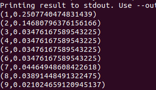
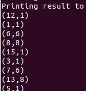
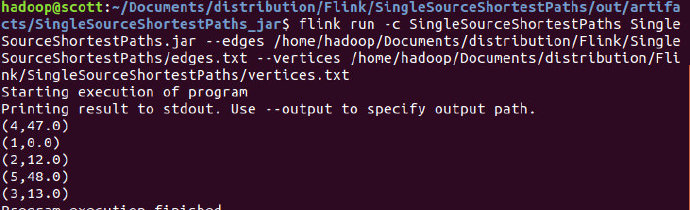

PageRank
主要参考官网的example
算法流程
每次计算当前每个网页的转移概率，计算下一时刻到达每个网页的概率并加入随机跳转
数据准备
pages.txt
准备一些顶点，例如1-15
links.txt
准备一些连接边（也就是链接数）：
1 2
1 15
2 3
2 4
2 5
2 6
2 7
3 13
4 2
5 11
5 12
6 1
6 7
6 8
7 1
7 8
8 1
8 9
8 10
PageRank.java
@SuppressWarnings("serial")
public class PageRank {
private static final double DAMPENING_FACTOR = 0.85;
private static final double EPSILON = 0.0001;
// *************************************************************************
// PROGRAM
// *************************************************************************
public static void main(String[] args) throws Exception {
ParameterTool params = ParameterTool.fromArgs(args);
final int numPages = params.getInt("numPages", PageRankData.getNumberOfPages());
final int maxIterations = params.getInt("iterations", 10);
// set up execution environment
final ExecutionEnvironment env = ExecutionEnvironment.getExecutionEnvironment();
// make the parameters available to the web ui
env.getConfig().setGlobalJobParameters(params);
// get input data
DataSet<Long> pagesInput = getPagesDataSet(env, params);
DataSet<Tuple2<Long, Long>> linksInput = getLinksDataSet(env, params);
// assign initial rank to pages pi = ([1,1/n] ,... [n,1/n])
DataSet<Tuple2<Long, Double>> pagesWithRanks = pagesInput.
map(new RankAssigner((1.0d / numPages)));
// build adjacency list from link input (1,[2,3,5])...
DataSet<Tuple2<Long, Long[]>> adjacencyListInput =
linksInput.groupBy(0).reduceGroup(new BuildOutgoingEdgeList());
// set iterative data set
IterativeDataSet<Tuple2<Long, Double>> iteration = pagesWithRanks.iterate(maxIterations);
DataSet<Tuple2<Long, Double>> newRanks = iteration
// join pages with outgoing edges and distribute rank [1,1/n] join 1,[1,3,5] => [1,1/3n],[3,1/3n],[5,1/3n]
.join(adjacencyListInput).where(0).equalTo(0).flatMap(new JoinVertexWithEdgesMatch())
// collect and sum ranks
.groupBy(0).aggregate(SUM, 1)
// apply dampening factor choosing stay or leave
.map(new Dampener(DAMPENING_FACTOR, numPages));
DataSet<Tuple2<Long, Double>> finalPageRanks = iteration.closeWith(
newRanks,
newRanks.join(iteration).where(0).equalTo(0)
// termination condition
.filter(new EpsilonFilter()));
// emit result
if (params.has("output")) {
finalPageRanks.writeAsCsv(params.get("output"), "\n", " ");
// execute program
env.execute("Basic Page Rank Example");
} else {
System.out.println("Printing result to stdout. Use --output to specify output path.");
finalPageRanks.print();
}
}
// *************************************************************************
// USER FUNCTIONS
// *************************************************************************
/**
* A map function that assigns an initial rank to all pages.
*/
public static final class RankAssigner implements MapFunction<Long, Tuple2<Long, Double>> {
Tuple2<Long, Double> outPageWithRank;
public RankAssigner(double rank) {
this.outPageWithRank = new Tuple2<Long, Double>(-1L, rank);
}
@Override
public Tuple2<Long, Double> map(Long page) {
outPageWithRank.f0 = page;
return outPageWithRank;
}
}
/**
* A reduce function that takes a sequence of edges and builds the adjacency list for the vertex where the edges
* originate. Run as a pre-processing step.
*/
@ForwardedFields("0")
public static final class BuildOutgoingEdgeList implements GroupReduceFunction<Tuple2<Long, Long>, Tuple2<Long, Long[]>> {
private final ArrayList<Long> neighbors = new ArrayList<Long>();
@Override
public void reduce(Iterable<Tuple2<Long, Long>> values, Collector<Tuple2<Long, Long[]>> out) {
neighbors.clear();
Long id = 0L;
for (Tuple2<Long, Long> n : values) {
id = n.f0;
neighbors.add(n.f1);
}
out.collect(new Tuple2<Long, Long[]>(id, neighbors.toArray(new Long[neighbors.size()])));
}
}
/**
* Join function that distributes a fraction of a vertex's rank to all neighbors.
*/
public static final class JoinVertexWithEdgesMatch implements FlatMapFunction<Tuple2<Tuple2<Long, Double>, Tuple2<Long, Long[]>>, Tuple2<Long, Double>> {
@Override
public void flatMap(Tuple2<Tuple2<Long, Double>, Tuple2<Long, Long[]>> value, Collector<Tuple2<Long, Double>> out){
Long[] neighbors = value.f1.f1;
double rank = value.f0.f1;
double rankToDistribute = rank / ((double) neighbors.length);
for (Long neighbor: neighbors) {
out.collect(new Tuple2<Long, Double>(neighbor, rankToDistribute));
}
}
}
/**
* The function that applies the page rank dampening formula.
*/
@ForwardedFields("0")
public static final class Dampener implements MapFunction<Tuple2<Long, Double>, Tuple2<Long, Double>> {
private final double dampening;
private final double randomJump;
public Dampener(double dampening, double numVertices) {
this.dampening = dampening;
this.randomJump = (1 - dampening) / numVertices;
}
@Override
public Tuple2<Long, Double> map(Tuple2<Long, Double> value) {
value.f1 = (value.f1 * dampening) + randomJump;
return value;
}
}
/**
* Filter that filters vertices where the rank difference is below a threshold.
*/
public static final class EpsilonFilter implements FilterFunction<Tuple2<Tuple2<Long, Double>, Tuple2<Long, Double>>> {
@Override
public boolean filter(Tuple2<Tuple2<Long, Double>, Tuple2<Long, Double>> value) {
return Math.abs(value.f0.f1 - value.f1.f1) > EPSILON;
}
}
// *************************************************************************
// UTIL METHODS
// *************************************************************************
private static DataSet<Long> getPagesDataSet(ExecutionEnvironment env, ParameterTool params) {
if (params.has("pages")) {
return env.readCsvFile(params.get("pages"))
.fieldDelimiter(" ")
.lineDelimiter("\n")
.types(Long.class)
.map(new MapFunction<Tuple1<Long>, Long>() {
@Override
public Long map(Tuple1<Long> v) {
return v.f0;
}
});
} else {
System.out.println("Executing PageRank example with default pages data set.");
System.out.println("Use --pages to specify file input.");
return PageRankData.getDefaultPagesDataSet(env);
}
}
private static DataSet<Tuple2<Long, Long>> getLinksDataSet(ExecutionEnvironment env, ParameterTool params) {
if (params.has("links")) {
return env.readCsvFile(params.get("links"))
.fieldDelimiter(" ")
.lineDelimiter("\n")
.types(Long.class, Long.class);
} else {
System.out.println("Executing PageRank example with default links data set.");
System.out.println("Use --links to specify file input.");
return PageRankData.getDefaultEdgeDataSet(env);
}
}
}
注意点
- 处理逻辑为：首先将输入数据转为邻接链表，然后迭代计算每一次的Rank，再加上每一次dampening（可能停留，可能随机），得到下一次的Rank
- 最后在closeWith中与前一次的Rank值进行对比，小于阈值则退出循环
运行
打包成Jar包，并执行：
flink run -c PageRank PageRank.jar --links /home/hadoop/Documents/distribution/Flink/PageRank/links.txt --pages /home/hadoop/Documents/distribution/Flink/PageRank/pages.txt
结果为：

ConnectedComponents
数据准备
提供基本数据集，与PageRank一样，指定顶点和边
vertices.txt
准备一些顶点，例如1-16
edges.txt
准备一些连接边：
1 2
2 3
2 4
3 5
6 7
8 9
8 10
5 11
11 12
10 13
9 14
13 14
1 15
16 1
ConnectedComponents.java
import org.apache.flink.api.common.functions.FlatJoinFunction;
import org.apache.flink.api.common.functions.FlatMapFunction;
import org.apache.flink.api.common.functions.JoinFunction;
import org.apache.flink.api.common.functions.MapFunction;
import org.apache.flink.api.java.DataSet;
import org.apache.flink.api.java.ExecutionEnvironment;
import org.apache.flink.api.java.aggregation.Aggregations;
import org.apache.flink.api.java.functions.FunctionAnnotation.ForwardedFields;
import org.apache.flink.api.java.functions.FunctionAnnotation.ForwardedFieldsFirst;
import org.apache.flink.api.java.functions.FunctionAnnotation.ForwardedFieldsSecond;
import org.apache.flink.api.java.operators.DeltaIteration;
import org.apache.flink.api.java.tuple.Tuple1;
import org.apache.flink.api.java.tuple.Tuple2;
import org.apache.flink.api.java.utils.ParameterTool;
import org.apache.flink.util.Collector;
@SuppressWarnings("serial")
public class ConnectedComponents {
// *************************************************************************
// PROGRAM
// *************************************************************************
public static void main(String... args) throws Exception {
// Checking input parameters
final ParameterTool params = ParameterTool.fromArgs(args);
// set up execution environment
ExecutionEnvironment env = ExecutionEnvironment.getExecutionEnvironment();
final int maxIterations = params.getInt("iterations", 10);
// make parameters available in the web interface
env.getConfig().setGlobalJobParameters(params);
// read vertex and edge data
DataSet<Long> vertices = getVertexDataSet(env, params);
DataSet<Tuple2<Long, Long>> edges = getEdgeDataSet(env, params).flatMap(new UndirectEdge());
// assign the initial components (equal to the vertex id) [1,1],[2,2]
DataSet<Tuple2<Long, Long>> verticesWithInitialId =
vertices.map(new DuplicateValue<Long>());
// open a delta iteration
DeltaIteration<Tuple2<Long, Long>, Tuple2<Long, Long>> iteration =
verticesWithInitialId.iterateDelta(verticesWithInitialId, maxIterations, 0);
// apply the step logic: join with the edges, select the minimum neighbor, update if the component of the candidate is smaller
DataSet<Tuple2<Long, Long>> changes = iteration.getWorkset().join(edges).where(0).equalTo(0).with(new NeighborWithComponentIDJoin())
.groupBy(0).aggregate(Aggregations.MIN, 1)
.join(iteration.getSolutionSet()).where(0).equalTo(0)
.with(new ComponentIdFilter());
// close the delta iteration (delta and new workset are identical)
DataSet<Tuple2<Long, Long>> result = iteration.closeWith(changes, changes);
// emit result
if (params.has("output")) {
result.writeAsCsv(params.get("output"), "\n", " ");
// execute program
env.execute("Connected Components Example");
} else {
System.out.println("Printing result to stdout. Use --output to specify output path.");
result.print();
}
}
// *************************************************************************
// USER FUNCTIONS
// *************************************************************************
/**
* Function that turns a value into a 2-tuple where both fields are that value.
*/
@ForwardedFields("*->f0")
public static final class DuplicateValue<T> implements MapFunction<T, Tuple2<T, T>> {
@Override
public Tuple2<T, T> map(T vertex) {
return new Tuple2<T, T>(vertex, vertex);
}
}
/**
* Undirected edges by emitting for each input edge the input edges itself and an inverted version.
*/
public static final class UndirectEdge implements FlatMapFunction<Tuple2<Long, Long>, Tuple2<Long, Long>> {
Tuple2<Long, Long> invertedEdge = new Tuple2<Long, Long>();
@Override
public void flatMap(Tuple2<Long, Long> edge, Collector<Tuple2<Long, Long>> out) {
invertedEdge.f0 = edge.f1;
invertedEdge.f1 = edge.f0;
out.collect(edge);
out.collect(invertedEdge);
}
}
/**
* UDF that joins a (Vertex-ID, Component-ID) pair that represents the current component that
* a vertex is associated with, with a (Source-Vertex-ID, Target-VertexID) edge. The function
* produces a (Target-vertex-ID, Component-ID) pair.
*/
@ForwardedFieldsFirst("f1->f1")
@ForwardedFieldsSecond("f1->f0")
public static final class NeighborWithComponentIDJoin implements JoinFunction<Tuple2<Long, Long>, Tuple2<Long, Long>, Tuple2<Long, Long>> {
@Override
public Tuple2<Long, Long> join(Tuple2<Long, Long> vertexWithComponent, Tuple2<Long, Long> edge) {
return new Tuple2<Long, Long>(edge.f1, vertexWithComponent.f1);
}
}
/**
* Emit the candidate (Vertex-ID, Component-ID) pair if and only if the
* candidate component ID is less than the vertex's current component ID.
*/
@ForwardedFieldsFirst("*")
public static final class ComponentIdFilter implements FlatJoinFunction<Tuple2<Long, Long>, Tuple2<Long, Long>, Tuple2<Long, Long>> {
@Override
public void join(Tuple2<Long, Long> candidate, Tuple2<Long, Long> old, Collector<Tuple2<Long, Long>> out) {
if (candidate.f1 < old.f1) {
out.collect(candidate);
}
}
}
// *************************************************************************
// UTIL METHODS
// *************************************************************************
private static DataSet<Long> getVertexDataSet(ExecutionEnvironment env, ParameterTool params) {
if (params.has("vertices")) {
return env.readCsvFile(params.get("vertices")).types(Long.class).map(
new MapFunction<Tuple1<Long>, Long>() {
public Long map(Tuple1<Long> value) {
return value.f0;
}
});
} else {
System.out.println("Executing Connected Components example with default vertices data set.");
System.out.println("Use --vertices to specify file input.");
return ConnectedComponentsData.getDefaultVertexDataSet(env);
}
}
private static DataSet<Tuple2<Long, Long>> getEdgeDataSet(ExecutionEnvironment env, ParameterTool params) {
if (params.has("edges")) {
return env.readCsvFile(params.get("edges")).fieldDelimiter(" ").types(Long.class, Long.class);
} else {
System.out.println("Executing Connected Components example with default edges data set.");
System.out.println("Use --edges to specify file input.");
return ConnectedComponentsData.getDefaultEdgeDataSet(env);
}
}
}
注意点
- 首先将每个点映射成（id，id），表示初始化每个点都是自己的连通分量。
- 对当前的连通分量与边进行join，得到
(Target-vertex-ID, Component-ID)的pair，并保留最小的ID作为当前的连通分量。 - 在DeltaIteration中，将
WorkSet计算得到的新的强连通分量与SolutionSet进行比较，得到changes，若changes存在（不为空），则继续迭代，同时，将changes传给SolutionSet和WorkSet。
运行
flink run -c ConnectedComponents ConnectedComponents.jar --edges /home/hadoop/Documents/distribution/Flink/ConnectedComponents/edges.txt --vertices /home/hadoop/Documents/distribution/Flink/ConnectedComponents/vertices.txt

SingleSourceShortestPaths
数据准备
首先我们需要准备边和点
边：
1 2 12.0
1 3 13.0
2 3 23.0
3 4 34.0
3 5 35.0
4 5 45.0
5 1 51.0
点：
1
2
3
4
5
SingleSourceShortestPaths.java
import org.apache.flink.api.common.functions.FlatJoinFunction;
import org.apache.flink.api.common.functions.JoinFunction;
import org.apache.flink.api.common.functions.MapFunction;
import org.apache.flink.api.common.typeinfo.Types;
import org.apache.flink.api.java.DataSet;
import org.apache.flink.api.java.ExecutionEnvironment;
import org.apache.flink.api.java.aggregation.Aggregations;
import org.apache.flink.api.java.functions.FunctionAnnotation;
import org.apache.flink.api.java.operators.DeltaIteration;
import org.apache.flink.api.java.tuple.Tuple1;
import org.apache.flink.api.java.tuple.Tuple2;
import org.apache.flink.api.java.tuple.Tuple3;
import org.apache.flink.api.java.utils.ParameterTool;
import org.apache.flink.util.Collector;
@SuppressWarnings("serial")
public class SingleSourceShortestPaths {
public static int sourceVerticeID = 1;
public static void main(String[] args) throws Exception {
final ParameterTool params = ParameterTool.fromArgs(args);
ExecutionEnvironment env = ExecutionEnvironment.getExecutionEnvironment();
DataSet<Tuple3<Integer, Integer, Double>> edges = getEdgesDataSet(params, env);
DataSet<Tuple2<Integer, Double>> vertices = getVerticesDataSet(params, env);
DeltaIteration<Tuple2<Integer, Double>, Tuple2<Integer, Double>> iteration = vertices
.iterateDelta(vertices, 100,0);
DataSet<Tuple2<Integer, Double>> NewSolutionSet = iteration.getWorkset()
.join(edges).where(0).equalTo(0)
.with(new FindDistance())
.groupBy(0).aggregate(Aggregations.MIN, 1)
.join(iteration.getSolutionSet()).where(0).equalTo(0)
.with(new DistanceFilter());
// close the delta iteration (changes are empty)
DataSet<Tuple2<Integer, Double>> result = iteration.closeWith(NewSolutionSet, NewSolutionSet);
// emit result
if (params.has("output")) {
result.writeAsCsv(params.get("output"), "\n", " ");
// execute program
env.execute("Connected Components Example");
} else {
System.out.println("Printing result to stdout. Use --output to specify output path.");
result.print();
}
}
public static final class DistanceFilter implements FlatJoinFunction<Tuple2<Integer, Double>, Tuple2<Integer, Double>, Tuple2<Integer, Double>> {
@Override
public void join(Tuple2<Integer, Double> candidate, Tuple2<Integer, Double> old, Collector<Tuple2<Integer, Double>> out) throws Exception {
if (candidate.f1 < old.f1)
out.collect(candidate);
}
}
/**
* (from,to,dis) join (point,dis)
* produces a (point, distance) pair.
*/
@FunctionAnnotation.ForwardedFieldsSecond("f1->f0")
public static final class FindDistance implements JoinFunction<Tuple2<Integer, Double>, Tuple3<Integer, Integer, Double>, Tuple2<Integer, Double>> {
@Override
public Tuple2<Integer, Double> join(Tuple2<Integer, Double> vertices, Tuple3<Integer, Integer, Double> edges) throws Exception {
return Tuple2.of(edges.f1, vertices.f1 < Double.POSITIVE_INFINITY ? vertices.f1 + edges.f2 : Double.POSITIVE_INFINITY);
}
}
/**
* Get Edges data
*
* @param params
* @param env
* @return
*/
private static DataSet<Tuple3<Integer, Integer, Double>> getEdgesDataSet(ParameterTool params, ExecutionEnvironment env) {
if (params.has("edges")) {
return env.readCsvFile(params.get("edges"))
.fieldDelimiter(" ")
.types(Integer.class, Integer.class, Double.class);
} else {
return SingleSourceShortestPathsData.getDefaultEdgeDataSet(env);
}
}
/**
* Get Vertices data
*
* @param params
* @param env
* @return
*/
private static DataSet<Tuple2<Integer, Double>> getVerticesDataSet(ParameterTool params, ExecutionEnvironment env) {
DataSet<Integer> vertices;
if (params.has("vertices")) {
vertices = env.readCsvFile(params.get("vertices")).types(Integer.class).map(
new MapFunction<Tuple1<Integer>, Integer>() {
public Integer map(Tuple1<Integer> value) {
return value.f0;
}
});
} else
vertices = env.fromElements(1, 2, 3, 4, 5);
return vertices.map(new MapFunction<Integer, Tuple2<Integer, Double>>() {
@Override
public Tuple2<Integer, Double> map(Integer integer) throws Exception {
if (integer == sourceVerticeID)
return Tuple2.of(integer, 0.0);
else
return Tuple2.of(integer, Double.POSITIVE_INFINITY);
}
});
}
}
注意点：
- 正确使用DeltaIteration，分清楚SolutionSet和WorkSet，其中，CloseWith的第一个是要merge到SolutionSet，第二个作为WorkSet。
- 通过比较是否有新的最短路径产生来结束循环
运行
默认数据运行：
flink run -c SingleSourceShortestPaths SingleSourceShortestPaths.jar

使用指定参数运行：
flink run -c SingleSourceShortestPaths SingleSourceShortestPaths.jar --edges /home/hadoop/Documents/distribution/Flink/SingleSourceShortestPaths/edges.txt --vertices /home/hadoop/Documents/distribution/Flink/SingleSourceShortestPaths/vertices.txt
